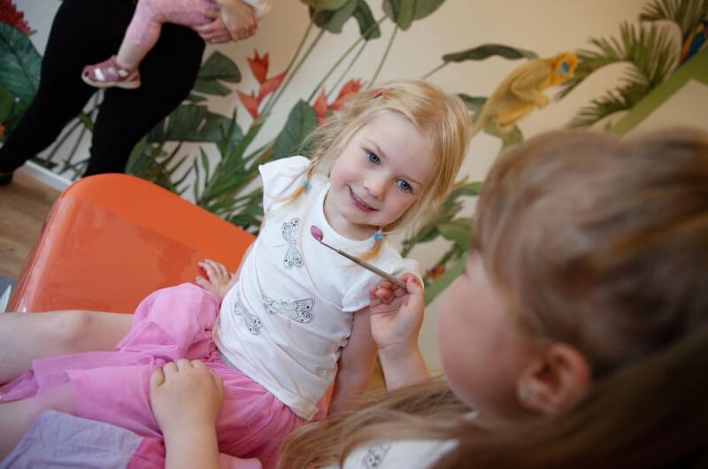

Дитячий стоматолог у Гамбурзі (Hoheluft)
Kinderzahnarztpraxis HoheLuft — спеціалізована клініка дитячої та підліткової стоматології. Ми хочемо, щоб кожен візит був для вашої дитини позитивним досвідом.
Ми розмовляємо німецькою, англійською та арабською.
Ви можете взяти з собою людину, яка допоможе з перекладом.
Наші послуги
- Огляди з появи першого зуба, щонайменше кожні шість місяців
- Профілактика, професійна чистка та навчання чищенню зубів
- Герметизація фісур для захисту від карієсу
- Пломби та дитячі коронки
- Лікування «крейдяних» зубів (MIH)
- Цифровий рентген з низьким опроміненням
- «Веселий газ» (закис азоту) для дітей, які бояться
- Лікування під загальним наркозом
Ми лікуємо дітей з державним і приватним медичним страхуванням.

Як записатися онлайн
- Натисніть кнопку нижче. Відкриється сторінка запису (Dr. Flex) німецькою мовою.
- Виберіть потрібний тип прийому — дивіться таблицю нижче.
- Виберіть дату й час.
- Введіть ім'я дитини та свій номер телефону й підтвердьте запис.
Порада: ваш браузер може перекласти сторінку запису. У Chrome натисніть значок перекладу в адресному рядку, у Safari — «aA», а потім «Перекласти».
Типи прийомів
| На сторінці запису (німецькою) | Що це означає |
|---|---|
| Erstberatung 1. - 5. Lebensjahr | Перший візит, дитина 1–5 років |
| Erstberatung ab dem 6. Lebensjahr | Перший візит, дитина від 6 років |
| Vorsorgeuntersuchung Bestandspatient 1. - 5. Lebensjahr | Огляд для постійних пацієнтів, 1–5 років |
| Vorsorgeuntersuchung Bestandspatient ab dem 6. Lebensjahr | Огляд для постійних пацієнтів, від 6 років |
| Professionelle Zahnreinigung Bestandspatient | Професійна чистка зубів для постійних пацієнтів |
| Aufklärungsgespräch vor Narkosebehandlung ohne Kind | Консультація перед лікуванням під наркозом (без дитини) |
Хочете зателефонувати? Телефон: 040 40 11 321 0
Перед першим візитом можна заповнити анкету про стан здоров'я онлайн (німецькою мовою). Анкета про здоров'я
Години роботи
| Понеділок – четвер | 9:00–13:00 14:00–17:00 |
| П'ятниця | 9:00–13:00 |
| Субота, неділя | зачинено |
Як нас знайти
Hoheluftchaussee 52
20253 Hamburg
- Метро U3: станція Hoheluftbrücke
- Автобуси 5, 20, 25, X35: зупинка Eppendorfer Weg (Ost)
- Паркування: Hoheluftchaussee, паркінг у внутрішньому дворі, Parkhaus Falkenried